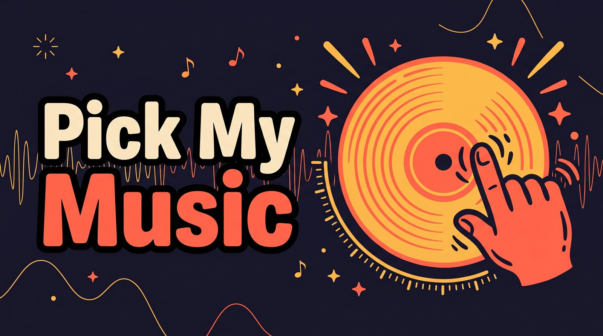

Pick My Music
Pick My Music
Posłuchaj. Zgadnij, kiedy to wyszło. Ułóż swoją oś czasu.

Posłuchaj. Zgadnij, kiedy to wyszło. Ułóż swoją oś czasu.
Nowa gra
Klucz zostaje tylko w tej karcie przeglądarki. Weź go z aistudio.google.com.
Możesz wpisać nowszy model, jeśli masz dostęp.
Zasady
Każdy gracz zaczyna z jedną odkrytą kartą. W swojej turze słuchasz fragmentu piosenki i wybierasz miejsce na swojej osi czasu: przed, po albo między kartami, które już masz. Trafisz — karta zostaje u ciebie. Pomylisz się — przepada. Wygrywa ten, kto pierwszy zbierze ustaloną liczbę kart.
Tworzę talię
0% piosenek
Oś czasu
Kliknij szczelinę, w którą pasuje utwór.
Koniec gry